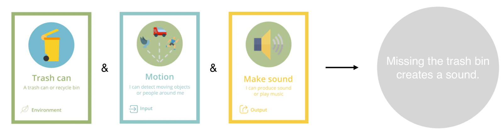
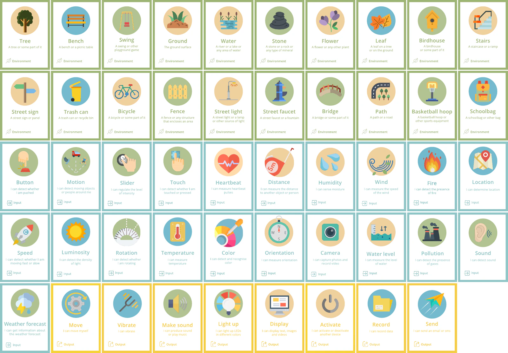
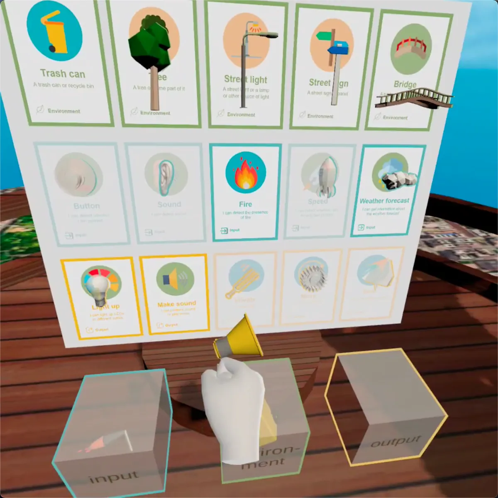
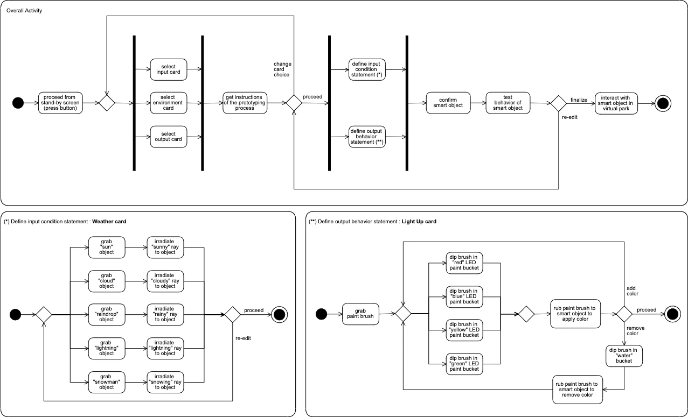
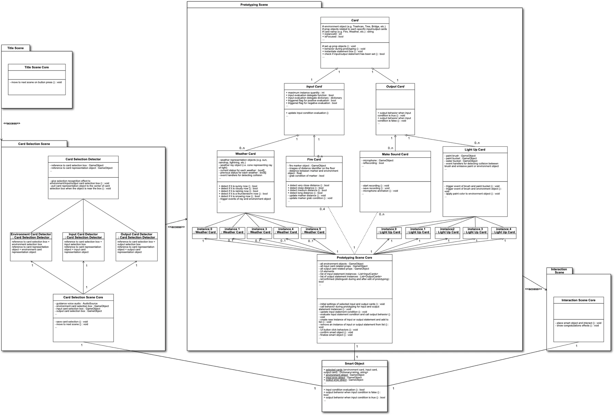

어린이를 위한 인터랙티브 오브젝트 프로토타이핑 VR 시스템 개발
2021년 2월
개요
Smart Codesign VR은 가상현실에서 인터랙티브한 ‘스마트 오브젝트’를 만들고 시험하는 프로토타입 플랫폼이다. 플레이어는 환경·입력·출력 카드를 한 장씩 고른 뒤, 몸의 움직임으로 오브젝트가 언제 반응하고 무엇을 할지 정한다. 완성한 가상 오브젝트를 공원에 놓고 동작을 시험할 수 있다.
바탕이 된 것은 밀라노 공과대학교 i3Lab이 개발한 ‘SNaP(The Smart Nature Protagonists)’이라는 보드게임이다. SNaP에서 아이들은 카드를 조합해 스마트 오브젝트를 고안한다. 다만 거기서 태어나는 것은 종이 위의 한 문장에 머물러 있었다. 이 프로젝트는 그 한 문장을 VR 공간에서 실체화해, 자기 몸으로 조립하고 만질 수 있는 것으로 만들고자 했다.
밀라노 공과대학교의 수업 ‘Advanced User Interfaces’(2020–21학년도)의 최종 과제로, 네 명의 팀이 설계·구현했다. 상정한 이용자는 11~13세 아동이며, 그중에서도 신경발달장애(NDD)가 있는 아이를 염두에 두었다. Oculus Quest 2를 대상으로 Unity와 C#으로 구현했고, 카드 선택부터 공원에서의 조작까지 전 과정이 이어져 동작하는 프로토타입에 이르렀다.
SNaP과 설계 배경
아이가 디자인의 주역이 되는 게임
SNaP에서는 어린이 2~4명이 ‘디자이너’가 되고, 진행을 맡은 어른이 ‘시장’ 역할을 한다. 시장이 미션을 제시하면 아이들이 의논하고 카드를 조합해 그 문제를 해결하는 스마트 오브젝트를 설계한다. 창의성, 협동 능력, 생각을 표현하는 능력을 기르는 것이 게임의 목표다. 신경발달장애가 있는 어린이의 사용도 고려했지만, 이 프로젝트에서는 치료 효과나 교육 효과를 평가하지 않았다.
환경·입력·출력 — 세 종류의 카드
SNaP의 카드는 세 종류이며, 저마다 역할이 다르다.
환경 카드는 스마트하게 만들 대상을 나타낸다. 나무, 벤치, 그네, 수역, 돌, 가로등, 쓰레기통, 자전거, 다리, 계단, 책가방처럼 공원이나 거리에서 친숙하게 접하는 사물과 환경 요소들이다. 환경 카드는 입력과 출력 기능을 담을 대상을 정한다.
입력(Input) 카드는 그 대상물이 무엇을 감지할지 정한다. 버튼, 움직임, 접촉, 거리, 온도, 습도, 밝기, 색, 소리, 불, 수위, 일기예보 등, 센서에 해당하는 것들이다.
출력(Output) 카드는 그 대상물이 무엇을 할지 정한다. 빛나기, 소리 내기, 진동하기, 움직이기, 표시하기, 기록하기, 전송하기 — 액추에이터에 해당하는 것들이다.
환경 카드는 입력과 출력의 조합에 맥락을 부여한다. 입력이 움직임이고 출력이 소리일 때, 쓰레기통은 쓰레기가 빗나가면 소리를 내고, 가로등은 누군가 다가오면 알려 줄 수 있다. 입력과 출력이 장치의 거동을 정한다면, 환경은 그 거동을 일상 속 상황에 연결한다.


글로 쓴 아이디어를 상호작용할 수 있는 가상 오브젝트로
이 프로젝트를 진행하던 당시, SNaP 세션은 생각해 낸 스마트 오브젝트를 한 문장으로 옮겨 적는 데서 끝났다. i3Lab에서는 태블릿과 Arduino를 결합해 그것을 물리적으로 조립하는 ‘피지컬 보드’도 병행해 개발되고 있었다. Smart Codesign VR은 그에 대한 또 하나의 답으로, VR을 매체로 고른 것이다. 연구 팀이 아직 시도하지 않은 방향이었다.
VR에는 두 가지 가능성이 있었다. 첫째, 아이들이 온몸의 움직임으로 프로토타입을 만들 수 있다. 쥐고, 나르고, 빛을 비추고, 붓으로 칠하는 행동이 조건과 동작을 정하는 조작이 된다. 둘째, 아이디어가 눈에 보이는 가상 오브젝트로 구현되어 즉시 상호작용할 수 있다. 글로 쓴 설명이 눈앞에 크기와 형태를 가진 대상으로 나타나는 것이다.
누구를 위해 설계했는가
대상 사용자는 11~13세 어린이이며, 특히 신경발달장애가 있는 어린이를 고려했다. 스마트 오브젝트를 설계하려면 어느 정도 논리적인 추론이 필요하므로, SNaP과 VR 버전 모두 이 연령대를 대상으로 설계했다.
직접 프로토타입을 만들고 상호작용하면서 자신의 생각을 표현하도록 돕는 것이 목표였다. 이는 설계 목표이며, 입증된 치료·교육 효과가 아니다. 프로토타입은 어린이를 대상으로 평가하지 않았다.
편안한 공간을 위한 설계
프로젝트에서 참고한 자료를 바탕으로 소리, 빛과 색, 공간 구성, 소재라는 네 영역을 공간 설계의 기준으로 삼았다. 소리는 청각적 민감성을 고려해 차음, 음량 조절, 조용하고 일정한 소리를 검토했다. 빛과 색은 차분한 저채도 배경을 사용하고, 밝고 채도 높은 색은 작은 영역에 한정하는 방안을 고려했다. 분명한 공간 경계, 질서 있는 배치, 단순하고 알아보기 쉬운 형태, 방해받지 않는 이동도 설계 고려사항이었다. 가상 환경에서는 설계자가 이런 요소를 조절할 수 있다. 이 프로젝트에서는 이러한 요소가 사용자의 편안함에 미치는 효과를 평가하지 않았다.
VR이라는 매체 자체가 지닌 제약
VR의 제약과 위험도 고려했다. 기기 비용, 멀미, 헤드셋 무게로 인한 머리와 목의 부담, 실제 주변 환경이 가려져 생길 수 있는 사고, 장시간 사용에 따른 눈의 피로, 지나친 몰입에 따른 의존 우려 등이 있다.
이러한 고려사항을 세 가지 설계 결정에 반영했다. 인터랙션은 간단하게 유지하면서 학습에 도움이 될 만큼의 과제를 제공하고, 시각과 소리는 지나치게 자극하지 않으면서 분명하게 전달하며, 체험에 명확한 끝을 두는 것이다. 프로토타이핑과 공원에서의 시험이 끝나면 활동을 마쳐, VR에 무한히 머무르도록 유도하지 않는다.
만든 것 — 체험의 흐름과 구현
체험의 네 단계
애플리케이션은 네 장면으로 구성되어 있다. 대기 화면, 카드 선택, 프로토타이핑, 그리고 공원에서의 조작이다.
1. 대기 화면
실행하면 먼저 타이틀 화면이 나오고, 컨트롤러 버튼을 누르기 전까지는 다음으로 넘어가지 않는다. 착용이나 자세가 갖춰지기 전에 본편이 시작되지 않도록 하기 위한, 의도적인 멈춤이다.
2. 카드 선택 — 쥐어서 상자에 넣는다
다음 장면에서 환경·입력·출력 카드를 한 장씩 고른다. 고르는 방법은 카드를 나타내는 오브젝트를 쥐고, 대응하는 상자까지 옮겨 넣는 것이다. 클릭으로 고르게 하지 않고 ‘쥐어서 옮기게’ 한 것은 VR이 가진 3차원 공간을 쓰기 위해서다. 세 상자 모두에 내용물이 들어간 것이 감지되면, 음성 안내와 함께 프로토타이핑 장면으로 넘어간다. 순서는 상관없지만, 셋을 모두 채우지 않으면 앞으로 나아갈 수 없다.

3. 프로토타이핑 — 조건과 동작을 몸으로 정한다
여기가 이 시스템의 중심이다. 고른 입력 카드에 대해 ‘어떤 때에’를, 출력 카드에 대해 ‘무엇을 할지’를 정의해 간다. 조작 방법은 카드마다 따로 만들었고, 6자유도 트래킹이 아니면 할 수 없는 움직임이 배정되어 있다.
예컨대 입력으로 ‘일기예보’를 고르면, 맑음·흐림·비·천둥·눈을 각각 나타내는 오브젝트가 손 가까이에 나타난다. 그중 하나를 쥐고 거기서 뻗어 나오는 광선을 대상 오브젝트에 비추면 조건이 확정된다. 출력으로 ‘빛나기’를 고른 경우에는 붓을 쥐고, 색마다 놓인 물감 통에 붓끝을 담근 뒤 대상에 문질러 발광색을 정한다. 칠한 색을 지우고 싶을 때는 ‘물’ 통에 담갔다가 문지르면 된다.
구현 과정의 중요한 결정은 하나의 오브젝트에 여러 입력·출력 쌍을 정의할 수 있게 한 것이다. 처음에는 ‘맑으면 빨갛게 빛난다’처럼 규칙 하나만 만들 수 있었다. 여러 쌍을 지원하면서 맑을 때는 빨강, 비가 올 때는 파랑, 눈이 올 때는 하양처럼 조건마다 다른 반응을 정할 수 있게 되었다. 플레이어는 각 쌍을 확정하기 전에 시험해 보고, 필요하면 돌아가 수정할 수 있다.


4. 공원: 오브젝트 시험하기
오브젝트를 확정하면 가상의 공원으로 넘어간다. 여기서는 자신이 조립한 스마트 오브젝트를 놓고, 정의한 입력 조건을 일으켜 출력의 동작을 실제로 확인한다. 오브젝트가 동작한 시점에서 축하 연출이 나오고 체험은 끝난다.
전체 흐름
이상을 UML 액티비티 다이어그램으로 정리한 것이 다음 그림이다. 위쪽이 전체의 흐름, 아래쪽 두 장이 ‘일기예보’ 카드와 ‘빛나기’ 카드 각각의 조작을 자세히 펼친 것이다. 카드 선택 뒤 지시를 받고 다시 고르기로 돌아갈 수 있다는 것, 확정과 시행 뒤 재편집으로 돌아갈 수 있다는 것이 각각 분기로 적혀 있다.

장치와 도구
대상 기기는 Oculus Quest 2다. 6자유도 트래킹을 갖추고 있어, 돌고 걷고 쥐는 움직임이 그대로 입력이 된다. 가상의 오브젝트를 손으로 거듭 다루는 것이 체험의 중심에 있는 이상, 스마트폰을 끼워 넣는 3자유도 기기로는 성립하지 않는다고 판단했다.
Unity와 C#으로 애플리케이션을 개발했다. Oculus Integration 패키지로 Quest 2와 연결하고, VR 카메라의 동작, 렌더링, 컨트롤러 입력을 위한 API를 사용했다.
네 개의 씬과 13개의 클래스
시스템은 Unity의 씬 단위로 넷으로 나뉘어 있으며, 체험의 네 장면에 그대로 대응한다. 클래스는 모두 13개이고, 그중 3개는 추상 클래스다.
타이틀 씬은 TitleSceneCore만을 가지며, 버튼을 누르면 다음 씬으로 넘긴다.
카드 선택 씬은 CardSelectionSceneCore와 CardSelectionDetector로 이루어진다. 전자가 후자를 세 개 생성해 환경·입력·출력 각각의 선택 박스에 할당한다. 각 박스는 카드를 나타내는 오브젝트가 가까이 오면 안쪽으로 끌어들이고 그 분류를 ‘선택됨’으로 만드는 동작을 공통으로 가진다. 셋이 모두 갖춰지면 선택 내용을 SmartObject 클래스에 써 넣고 씬을 진행시킨다. SmartObject는 정적 클래스여서 씬을 넘어가도 데이터가 사라지지 않는다. 이 데이터 유지 기능이 네 개의 씬을 하나의 연속된 체험으로 연결한다.
프로토타이핑 씬이 중심이다. PrototypingSceneCore가 절차 전체를 집중 관리하고, 카드의 동작은 Card를 정점으로 하는 상속 계층으로 나타낸다. Card 아래에 InputCard와 OutputCard가 있고, 다시 그 아래에 Weather, Fire, MakeSound, LightUp 같은 구체적인 카드 클래스가 늘어선다. 실제로 프로토타이핑 조작을 맡는 것은 말단의 구체 클래스뿐이므로, 위의 셋은 추상 클래스로 두었다.
PrototypingSceneCore는 입력 조건 인스턴스의 리스트와 출력 동작 인스턴스의 리스트를 가진다. 선택된 카드가 ‘일기예보’와 ‘빛나기’라면, 전자는 Weather의 인스턴스로, 후자는 LightUp의 인스턴스로만 채워진다. 시작할 때 각각 하나씩 자동 생성되고, 이후에는 UI의 추가 버튼을 누를 때마다 늘어난다. 매 프레임 리스트 안의 모든 입력 조건을 평가하고, 대응하는 출력 동작을 호출한다. 이용자가 확정하면 isConfirmed가 참이 되고, 조립된 동작 데이터가 SmartObject의 정적 속성에 기록된다.
인터랙션 씬은 InteractionSceneCore 클래스 하나로 구성된다. 공원에 오브젝트를 배치하고, 정해 놓은 조건과 반응을 시험하고, 마지막 축하 연출을 보여 주는 역할을 맡는다.

Smart Object로 표시된 정적 클래스가 씬 전환 사이에 데이터를 유지한다. 속성과 메서드는 읽기 쉽도록 간략화했다.소스 코드는 다음 링크에서 볼 수 있다:
github.com/takafumihoriuchi/SmartCodesignVR — Assets/myScripts
결과와 남은 과제
49장의 카드 중 9장 구현
프로토타입에는 카드 9장을 구현했다. 카드 선택, 조건과 동작 정의, 여러 인스턴스 관리, 씬 간 데이터 전달이라는 핵심 기능이 작동한다. 추가 카드를 구현할 기반을 마련했지만, 구현 작업은 남아 있다. 6장은 설계만 마쳤고, 나머지 34장은 인터랙션 설계와 구현이 모두 필요하다.
| 상태 | 카드 |
|---|---|
| 구현 완료 (9장) | 환경: 나무, 가로등, 도로 표지, 쓰레기통, 다리 입력: 불, 일기예보 출력: 소리 내기, 빛나기 |
| 설계만 완료 (6장) | 입력: 버튼, 속도, 소리 출력: 움직이기, 진동하기, 전송하기 |
| 미착수 (34장) | 환경 카드 15장, 입력 카드 16장, 출력 카드 3장 (표시하기, 기동하기, 기록하기) |
사용자 평가는 실시하지 않았다
실제 이용자에 의한 평가는 실시하지 않았다. 개발 당시에는 코로나19 유행으로 원격 참여가 이루어져, VR 헤드셋을 사용하는 대면 워크숍도 원격 평가 대안도 마련할 수 없었다. 따라서 이 프로젝트가 보일 수 있는 것은 설계한 체험이 동작하는 형태로 성립하는 데까지이며, 그것이 아이에게 쓰기 쉬운지, 치료·교육의 현장에서 의미를 갖는지는 확인되지 않았다.
향후 평가에서는 프로토타이핑 인터페이스가 얼마나 직관적인지 살펴볼 수 있다. 완료 시간, 완성한 스마트 오브젝트와 참가자가 처음 생각한 아이디어의 일치도, 의도하지 않은 버튼 입력 횟수 등을 지표로 삼을 수 있다. SUS(System Usability Scale)에 기반한 체험 후 설문으로 정량적 데이터를 보완할 수 있다. 참가자의 동작을 관찰하기 위한 녹화도 동의와 적절한 절차를 거쳐 검토할 수 있다. 2021년 프로젝트에서 제안한 평가 대상 연령은 13세로, SNaP의 대상 연령과 당시 참고한 Oculus 지침을 함께 고려한 것이었다. 향후 연구에서는 적용되는 지침과 연구 절차에 따라 참가 자격을 다시 검토해야 한다.
향후 과제
추가 개발에서 우선할 일은 UI와 UX를 다듬는 것이다. 시간과 경험의 제약으로 카드 조합을 작동하게 만드는 데 대부분의 노력을 들였고, 시각·청각·촉각 설계는 충분히 다듬지 못했다. VR에서 글자가 맡는 역할도 재검토할 필요가 있다. 평면에 맞춰 설계한 정보를 공간 사용자 인터페이스(SUI)로 전달하는 편이 나을 수도 있다. 대상 사용자를 위한 음성 인터랙션 역시 살펴볼 방향이다.
학술적인 확장으로는 세 갈래를 들었다. 하나는 같은 i3Lab에서 개발이 진행되던 피지컬 보드와의 비교다. 현실의 장소와 가상 환경에서 같은 협동 게임을 했을 때 가상 환경 쪽에서 대화의 양이 늘었다는 선행 연구가 있어, 같은 종류의 비교가 이 둘 사이에서도 성립할 수 있다. 둘째는 여러 사람의 동시 참여에 대한 대응이다. ‘Codesign’이라는 이름을 가진 이상, 가상 공간 안에서 타인과 함께 조립할 수 있다는 데에는 의미가 있다. 셋째는 스마트 오브젝트를 기술하는 형식을 표준화해, 플랫폼을 넘어 가지고 다닐 수 있게 하는 것이다.
정리
이 프로젝트는 스마트 오브젝트를 프로토타이핑할 수 있는 환경을 만들었다. SNaP의 세 카드 유형을 대상, 입력 조건, 동작이라는 구성 단위로 옮겼고, 플레이어가 쥐고, 가리키고, 칠하는 행동으로 이를 연결하도록 했다. 작동 가능한 프로토타입은 글로 쓴 아이디어를 상호작용할 수 있는 가상 오브젝트로 바꾸며, 동작을 씬 사이에 전달할 수 있는 데이터로 표현한다.
Takafumi Horiuchi, Paul Cozma-Ivan, Elmira Katsajeva, and Olivia Ludkiewicz, “Design and Implementation of a Smart Object Prototyping Platform in Virtual Reality for Children with NDD,” Advanced User Interfaces (A.Y. 2020–21) Final Exam Project, 밀라노 공과대학교, 2021년 2월.